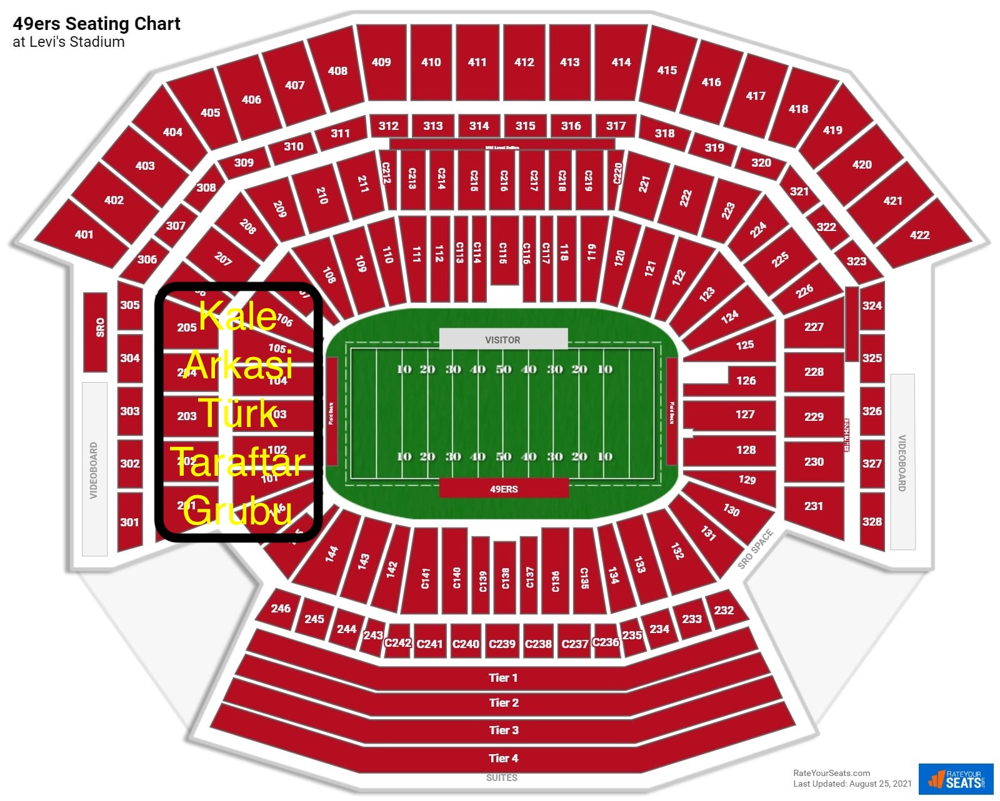

| İlk Yarı — 0' – 45' | ||||||
|---|---|---|---|---|---|---|
| Dakika | Kod | Tezahürat | Sözler | Nasıl Söylenir | Kim Söyleyecek | Örnek Video |
| Maç Öncesi | — | Kaptan Çağırma | — | Kale Arkası kalabalık grupları kaptanı çağırır, seksiyonu aktive eder. | Kale Arkası | ▶ Video |
| 0' Kickoff | T1 | Üçlü Yaptırmaca | Şşşşşşşşt… 3 – 2 – 1 Türkiye! 👏 Türkiye! 👏 | Maç başladıktan sonra tüm stad uzun bir "şşşşşşşşşşş" sesi çıkarır ; sessizlik sağlanır, ardından hep birlikte 3-2-1 geri sayımı, yapılır sonra iki defa yuksek sesle Türkiye alkış, Türkiye ve alkış. | Tüm Stad | ▶ Video |
| 0' (hemen sonra) | T2 | Lay Lay Lay | Lay lay lay lay lay lay lay lay laaaaaay… Aaaaaa Türkiye! | Tempolu şekilde söylenir. | Tüm Stad | ▶ Video |
| 10' | T3 | Kırmızı Beyaz En Büyük Türkiye | Kale Arkası: Kırmızı Stad: Beyaz Kale Arkası: Kırmızı Stad: Beyaz Kale Arkası: En büyük Stad: Türkiye Kale Arkası: Şampiyon Stad: Türkiye | Kale Arkası "Karşı taraf beyaz desene" diyerek başlatır. Hazır olunca sözler karşılıklı bağırılır. | Kale Arkası + Tüm Stad (karşılıklı) |
▶ Video |
| 15' | T4 | Türkiye! Şak Şak Şak | Türkiye! 👏 👏 👏 | Tüm stad Türkiye ardından üç kez kuvvetli alkış. | Tüm Stad | ▶ Video |
| 20' Su Molası | Marş #1 | Dağ Başını Duman Almış | Dağ başını duman almış Gümüş dere durmaz akar Güneş ufuktan şimdi doğar Yürüyelim arkadaşlar Sesimizi yer gök su dinlesin Sert adımlarla her yer inlesin Sesimizi yer gök su dinlesin Sert adımlarla her yer inlesin | Maç başlarken tempolu ve güçlü şekilde söylenir. | Tüm Stad | ▶ Video |
| 25' | T2 | Lay Lay Lay | Lay lay lay lay lay lay lay lay laaaaaay… Aaaaaa Türkiye! | Tempolu şekilde söylenir. | Tüm Stad | ▶ Video |
| 30' | T3 | Kırmızı Beyaz En Büyük Türkiye | Kale Arkası: Kırmızı Stad: Beyaz Kale Arkası: Kırmızı Stad: Beyaz Kale Arkası: En büyük Stad: Türkiye Kale Arkası: Şampiyon Stad: Türkiye | Kale Arkası "Karşı taraf beyaz desene" diyerek başlatır. Hazır olunca sözler karşılıklı bağırılır. | Kale Arkası + Tüm Stad (karşılıklı) |
▶ Video |
| 40' | T2 | Lay Lay Lay | Lay lay lay lay lay lay lay lay laaaaaay… Aaaaaa Türkiye! | Tempolu şekilde söylenir. | Tüm Stad | ▶ Video |
| İkinci Yarı — 45' – 90' | ||||||
|---|---|---|---|---|---|---|
| Dakika | Kod | Tezahürat | Sözler | Nasıl Söylenir | Kim Söyleyecek | Örnek Video |
| 45' Kickoff | T1 | Üçlü Yaptırmaca | Şşşşşşşşt… 3 – 2 – 1 Türkiye! 👏 Türkiye! 👏 | Maç başladıktan sonra tüm stad uzun bir "şşşşşşşşşşş" sesi çıkarır ; sessizlik sağlanır, ardından hep birlikte 3-2-1 geri sayımı, yapılır sonra iki defa yuksek sesle Türkiye alkış, Türkiye ve alkış. | Tüm Stad | ▶ Video |
| 45' (hemen sonra) | T2 | Lay Lay Lay | Lay lay lay lay lay lay lay lay laaaaaay… Aaaaaa Türkiye! | Tempolu şekilde söylenir. | Tüm Stad | ▶ Video |
| 55' | T3 | Kırmızı Beyaz En Büyük Türkiye | Kale Arkası: Kırmızı Stad: Beyaz Kale Arkası: Kırmızı Stad: Beyaz Kale Arkası: En büyük Stad: Türkiye Kale Arkası: Şampiyon Stad: Türkiye | Kale Arkası "Karşı taraf beyaz desene" diyerek başlatır. Hazır olunca sözler karşılıklı bağırılır. | Kale Arkası + Tüm Stad (karşılıklı) |
▶ Video |
| 60' | T4 | Türkiye! Şak Şak Şak | Türkiye! 👏 👏 👏 | Tüm stad Türkiye ardından üç kez kuvvetli alkış. | Tüm Stad | ▶ Video |
| 70' Su Molası | Marş #2 | İzmir'in Dağlarında | İzmir'in dağlarında çiçekler açar (x2) Altın güneş orda sırmalar saçar (x2) Bozulmuş düşmanlar, hep yel gibi kaçar (x2) Yaşa Mustafa Kemal Paşa yaşa Adın yazılacak mücevher taşa (x2) | Maç başlarken tempolu ve güçlü şekilde söylenir. | Tüm Stad | ▶ Video |
| 75' | T2 | Lay Lay Lay | Lay lay lay lay lay lay lay lay laaaaaay… Aaaaaa Türkiye! (2 kez) | Batı ve Doğu tribünleri birlikte söyler. | Tüm Stad | ▶ Video |
| 80' | T3 | Kırmızı Beyaz En Büyük Türkiye | Kale Arkası: Kırmızı Stad: Beyaz Kale Arkası: Kırmızı Stad: Beyaz Kale Arkası: En büyük Stad: Türkiye Kale Arkası: Şampiyon Stad: Türkiye | Kale Arkası "Karşı taraf beyaz desene" diyerek başlatır. Hazır olunca sözler karşılıklı bağırılır. | Kale Arkası + Tüm Stad (karşılıklı) |
▶ Video |
| Özel Durumlar | |||||
|---|---|---|---|---|---|
| Durum | Tezahürat | Sözler | Nasıl Söylenir | Kim Söyleyecek | Örnek Video |
| ⚡ Top karşıya geçince | Islık | 🔔🔔🔔 | Top karşı tarafa geçince veya defans gerektiğinde güçlü ıslık. | Tüm Stad | ▶ Video |
| 😤 Gol yiyince | Motivasyon | Vur! Kır! Parçala! Maçı Kazan! | Güçlü ve coşkulu bağırılır. | Tüm Stad | ▶ Video |
| 🚩 Faul | Yuh + Islık | Yuh! 🔔🔔🔔 | Hakem kararı veya faul anında yuh ve güçlü ıslık. | Tüm Stad | ▶ Video |
| ⏰ Gol yok | Baskı Tezahüratı | Haydi bastır! Haydi bastır! Şimdi! Tam zamanı! Tam zamanı! Şimdi! | Hâlâ gol atılamıyorsa ritmik ve güçlü şekilde söylenir. | Tüm Stad | ▶ Video |
| Alternatif Marş Sözleri | |||||
|---|---|---|---|---|---|
| Kod | Marş Adı | Sözler | Nasıl Söylenir | Kim Söyleyecek | Örnek Video |
| A1 | Kimseyi Görmedim Ben | Kale Arkası: Kimseyi görmedim ben Stad: Senden daha güzel Kale Arkası: Kimseyi tanımadım ben Stad: Senden daha güzel Kale Arkası: Kimselere de bakmadım Stad: Aklımdan geçen Kale Arkası: Kimseyi tanımadım ben Stad: Senden daha özel Kale Arkası: Senden daha güzel Stad: Senden daha güzel Kale Arkası: Senden daha güzel Stad: Senden daha güzel | Kale Arkası ve Stad karşılıklı söyler. | Kale Arkası + Tüm Stad (karşılıklı) |
▶ Video |
| A2 | Ceddin Dede | La La La La La… | Tüm tribün birlikte söyler. | Tüm Stad | ▶ Video |